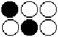
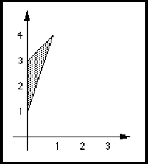

physicalDefaults ::= '(' 'physicalDefaults'
{ <schematicRequiredDefaults> }
')'
PhysicalDefaults gives required defaults for the scaling of specific view types. These values may be overridden, e.g. by physicalScaling.
(edifHeader
(edifLevel 0) (keywordMap ...)
(unitDefinitions ...)
(fontDefinitions ...)
(physicalDefaults
(schematicRequiredDefaults
(schematicMetric
(setDistance (unitRef mm))
(noHotspotGrid))
(fontRef courier)
(textHeight 10))))
physicalScaling schematicUnits
physicalScaling ::= '(' 'physicalScaling'
{ comment | <connectivityUnits> | <documentationUnits> |
<geometryMacroUnits> | <interfaceUnits> | <logicModelUnits> |
<maskLayoutUnits> | <pcbLayoutUnits> | <schematicUnits> |
<symbolicLayoutUnits> }
')'
PhysicalScaling is used to collect all scaling information for a library at the top of its technology construct and in the edifHeader.
(technology
(physicalScaling
(documentationUnits (setDistance (unitRef mm))) ...) ...)
This illustrates a physicalScaling. It sets documentation units to have distance measured in mm.
pixelPattern ::= '(' 'pixelPattern'
rowSize
{ pixelRow }
')'
PixelPattern defines a pattern of pixels. It is a two-dimensional array of pixels. RowSize defines the number of pixels in each row of pixels. PixelRow defines the status of each pixel in a row. Use one pixelRow construct for each row of pixels required. The first pixelRow defines the status of the uppermost row of pixels.
(fillPattern
(pixelPattern 1
(pixelRow (true))))
In this example, a pixel pattern is defined consisting of a single pixel which is on.
(fillPattern
(pixelPattern 3
(pixelRow (true) (false) (false))
(pixelRow (false) (true) (false))))
In this example, a pixel pattern is defined consisting of a two-by-three array of pixels, creating the pattern shown below, which assumes that the foreground color is black and the background color is white.

pixelRow ::= '(' 'pixelRow'
{ booleanToken }
')'
PixelRow defines a row of pixel values on the x axis.
A boolean true indicates that the pixel is to be displayed in the specified color. A boolean false indicates that the pixel is either unchanged or is displayed in the background color. The first boolean defines the status of the leftmost pixel.
See pixelPattern for an example.
point ::= '(' 'point'
pointValue
')'
Point provides a point value.
(property node (point (pt 0 10)))
In this example, the property node is of type point. A point value of (pt 0 10) is also specified.
boolean integer miNoMax number pointValue pt string
pointList ::= '(' 'pointList'
{ pointValue }
')'
PointList is used to specify an ordered list of points which usually represent a series of line segments within figure definitions. A nontrivial figure typically contains at least two points in path and at least three in polygon.
(pointList (pt 0 1) (pt 1 4) (pt 0 3) (pt 0 1))
pointValue ::= pt
attachmentPoint curve dot endPoint hotspot origin point pointList pt1 pt2 startPoint
PointValue describes the set of specifications of point values.
(dot (pt 10 100))
The above example specifies a dot located at (10, 100).
polygon ::= '(' 'polygon'
pointList
')'
A polygon represents a figure bounded by line segments joining consecutive points, including the line segment from the last point to the first point. If the first and last point are not the same, then the polygon contains the line segment between those two points as an implicit final line. All polygons are closed by definition.
The polygon may not touch or intersect itself, nor may it have coincident segments.
(polygon
(pointList
(pt 0 1)
(pt 1 4)
(pt 0 3)))
(polygon
(pointList
(pt 0 1)
(pt 1 4)
(pt 0 3)
(pt 0 1)))
This example shows two equivalent representations of the same triangle, shown in the figure below.

port ::= '(' 'port'
portNameDef
portDirection
{ <acLoad> | comment | <defaultConnection> | <designator> |
<nameInformation> | portDelay | portLoadDelay | property |
<schematicPortAttributes> | <unused> | userData }
')'
Port is the basic means of communicating signal information between cell clusters, and is the subject of all connectivity statements. Ports are defined in the interface of a cluster, and apply to all views and symbols within the cluster.
In Level 0 a port may not be arrayed; the construct portBundle is used to define structured ports.
Included with the definition are a number of attributes that apply to the port, such as designator and portDirection.
A port may have a defaultConnection which specifies that an instance of the port connects to a globalPort, unless explicitly joined to a signal by a portInstanceRef.
(port IN (inputPort))
This example declares an input port named IN.
connectivityBusJoined connectivityNetJoined schematicBusJoined schematicNetJoined portBundle signalJoined
portAnnotate ::= '(' 'portAnnotate'
extendPortDef
{ <acLoad> | comment | <designator> |
<directionalPortAttributeOverride> | portDelay | portDelayOverride |
portLoadDelay | portLoadDelayOverride | portPropertyOverride | property
}
')'
leafOccurrenceAnnotate occurrenceAnnotate occurrenceHierarchyAnnotate
PortAnnotate is used to hold annotation data for an individual port. This represents the data that is associated with a physical port, and which may need to be displayed on a schematic.
The extendPortDef must reference an individual one-bit port.
The portDirection must be consistent with that of the port definition, although it may override direction specific attributes.
(portAnnotate &1 (designator "6"))
In this example, the port &1 has a designator (physical pin number) of "6" associated with it.
portAttributeDisplay ::= '(' 'portAttributeDisplay'
{ <acLoadDisplay> | <dcFanInLoadDisplay> | <dcFanOutLoadDisplay>
| <dcMaxFanInDisplay> | <dcMaxFanOutDisplay> | <designatorDisplay>
| portDelayDisplay | portLoadDelayDisplay | <portNameDisplay> |
portPropertyDisplay }
')'
instancePortAttributeDisplay schematicMasterPortImplementation schematicMasterPortTemplate schematicSymbolPortImplementation schematicSymbolPortTemplate
PortAttributeDisplay gathers together the display positions for various attributes of ports. Within the context of template definitions, only addDisplay may be used within each of the attribute display constructs, and portPropertyDisplay, portDelayDisplay and portLoadDelayDisplay may not be used.
addDisplay removeDisplay replaceDisplay
portBundle ::= '(' 'portBundle'
portNameDef
portList
{ comment | <nameInformation> | property | userData }
')'
PortBundle provides a structuring mechanism to describe wide ports.
PortList is used to define an ordered list of all the ports in a portBundle. PortBundle is a structuring mechanism only and does not itself define the ports.
A port or portBundle may be directly referenced by zero or more portBundles in the same interface. A portBundle may not reference another port or portBundle more than once, either directly or indirectly.
(port DATA_0 (inputPort))
(port DATA_1 (inputPort))
(port DATA_2 (inputPort))
(port DATA_3 (inputPort))
(portBundle DATA
(portList
(portRef DATA_0)
(portRef DATA_1)
(portRef DATA_2)
(portRef DATA_3))
)
This example defines a portBundle named DATA with width 4. The ports in this portBundle may be accessed as a group by reference to portBundle DATA or individually by reference to the individual ports, e.g. DATA_0.
portDelay ::= '(' 'portDelay'
portDelayNameDef
derivation
delay
{ becomes | transition }
')'
instancePortAttributes port portAnnotate
PortDelay is an attribute of a port which is used to specify a delay for the given set of transitions. If no transition or becomes is specified, then the default is any transition.
PortDelay is named so that its value may be displayed using portDelayDisplay. Derivation indicates whether the delay is measured, calculated or a required value.
(port P1 (bidirectionalPort)
(portDelay PD1 (calculated)
(delay (mnm (e 5 0) (undefined) (undefined)))
(transition D U)))
The above example specifies a calculated delay minimum of 5 time units. This occurs on a transition from D to U of the port named P1.
portDelayDisplay portLoadDelay calculated measured required
portDelayDisplay ::= '(' 'portDelayDisplay'
portDelayNameRef
{ display }
')'
PortDelayDisplay is used to define display positions for portDelay.
portDelayNameDef ::= nameDef
PortDelayNameDef is a name definition for a port delay.
portDelayNameRef ::= nameRef
portDelayDisplay portDelayOverride
PortDelayNameRef is a reference to a portDelayNameDef.
portDelayOverride ::= '(' 'portDelayOverride'
portDelayNameRef
derivation
delay
{ becomes | transition }
')'
instancePortAttributes portAnnotate
PortDelayOverride is used to override the delay of a port. If no transition or becomes is specified, then the default is any transition.
(portDelayOverride PD1 (measured) (delay (mnm (e 10 0) (undefined) (undefined))) (transition D U))
portDirection ::= ( inputPort | outputPort | bidirectionalPort | unspecifiedDirectionPort )
PortDirection specifies the direction of signal information flow at a port. Ports may be input ports, output ports or bidirectional; they indicate that the signal flows into the cell, out of the cell, or both ways, respectively, at the port.
PortDirection specifies information flow, not current flow.
(port A (inputPort))
(port B (outputPort))
In the above example, a port named A is defined to be an input port, a port named B is defined to be an output port.
portDirectionIndicator ::= ( input | output | bidirectional | unspecified | unrestricted | mixedDirection )
schematicMasterPortTemplate schematicSymbolPortTemplate
PortDirectionIndicator is used to indicate the port direction that is appropriate for the port template. A port specified as an inputPort may use a schematicSymbolPortTemplate or schematicMasterPortTemplate with either a portDirectionIndicator of unrestricted, or one with a portDirectionIndicator of input. A similar rule applies for other port directions, as shown in the table below.
| portDirectionIndicator | Applicable portDirections |
| input | inputPort |
| output | outputPort |
| bidirectional | bidirectionalPort |
| unspecified | unspecifiedDirectionPort |
| unrestricted | Any portDirection allowed |
| mixedDirection | Any portBundle having ports with differ- ent portDirections |
(schematicSymbolPortTemplate INPUT_PORT
(schematicTemplateHeader ...)
(hotspot ...)
(input)
...)
(cell C1
...
(cluster CL1
(interface (interfaceUnits)
(port P1 (inputPort))
...)
...
(schematicSymbol SYMBOL
(schematicSymbolHeader ...)
(schematicSymbolPortImplementation IN
(portRef P1)
(schematicSymbolPortTemplateRef
INPUT_PORT)
(transform ...)
...))))
The schematicSymbolPortTemplate INPUT_PORT has a portDirectionIndicator of input which matches the specification of the port P1 in cluster CL1 of cell C1. The use of this template in the schematicSymbolPortImplementation of P1 is consistent with this.
portDirection inputPort outputPort
portInstanceRef ::= '(' 'portInstanceRef'
portNameRef
( instanceRef | instanceMemberRef )
')'
PortInstanceRef references a port or portBundle on an instance or a member of a wide instance.
See signalJoined and portJoined for restrictions on the use of portInstanceRef.
(portInstanceRef &1 (instanceRef NAND2))
The port &1 of the instance NAND2 is referenced in this example.
portJoined ::= '(' 'portJoined'
{ globalPortRef | localPortGroupRef | portInstanceRef | portRef }
')'
connectivityBusJoined connectivityNetJoined schematicBusJoined schematicNetJoined
PortJoined lists all the master ports, local port groups, instance ports and global ports that are joined by an interconnect object. The same port may not be referenced more than once within a portJoined.
(portJoined (portRef MP1) (portInstanceRef CLK (instanceRef I1)) (portInstanceRef CLK (instanceRef I2)) (globalPortRef CLOCK))
In this example, the master port MP1 is joined to the instance ports CLK of I1 and I2, and to the global port CLOCK.
portList ::= '(' 'portList'
{ portRef }
')'
event localPortGroup portBundle
PortList creates an ordered list of port references. It is used in a variety of constructs where such an ordered list is required.
(port PB1 ...) (port PB2 ...) (portBundle PB (portList (portRef PB1) (portRef PB2)) ...)
In the example above an ordered list of port references, P1, P2, is created with the portList construct.
portLoadDelay ::= '(' 'portLoadDelay'
portLoadDelayNameDef
derivation
loadDelay
{ becomes | transition }
')'
instancePortAttributes port portAnnotate
PortLoadDelay is an attribute of a port or instance port which is used to specify a delay for the given set of transitions. If no transition or becomes is specified, then the default is any transition.
The delay may be calculated, measured or required as specified by derivation. PortLoadDelay values may be displayed using portLoadDelayDisplay.
(port P1 (bidirectionalPort)
(portDelay PD1 (measured) (delay 25))
(portLoadDelay PLD1 (measured)
(loadDelay 2 1)
(transition D U)))
The above example specifies a measured delay of 25 time units plus 2 time units per unit of load-dependent delay. This occurs on a transition from D to U of the port named P1.
portLoadDelayDisplay measured calculated required
portLoadDelayDisplay ::= '(' 'portLoadDelayDisplay'
portLoadDelayNameRef
{ display }
')'
PortLoadDelayDisplay is used to define display positions for portLoadDelay.
portLoadDelayNameDef ::= nameDef
PortLoadDelayNameDef is a name definition for a port load delay.
portLoadDelayNameRef ::= nameRef
portLoadDelayDisplay portLoadDelayOverride
PortLoadDelayNameRef is a reference to a portLoadDelayNameDef.
portLoadDelayOverride ::= '(' 'portLoadDelayOverride'
portLoadDelayNameRef
derivation
loadDelay
{ becomes | transition }
')'
instancePortAttributes portAnnotate
PortLoadDelayOverride is used to override the load delay of a port. If no transition or becomes is specified, then the default is any transition.
(portLoadDelayOverride PLD1 (measured) (loadDelay 3 2) (transition D U))
portNameCaseSensitive ::= '(' 'portNameCaseSensitive'
booleanToken
')'
PortNameCaseSensitive defines whether or not the strings contained within nameInformation for ports are to be considered as case sensitive. Following normal precedence rules, this either applies to the entire EDIF data if this form occurs in edifHeader, or to the entire library if it occurs in libraryHeader. The default is that names are case sensitive.
See clusterNameCaseSensitive for an example.
nameInformation clusterNameCaseSensitive
portNameDef ::= nameDef
PortNameDef is used to create a name for a port or port bundle.
portNameDisplay ::= '(' 'portNameDisplay'
{ display | displayNameOverride }
')'
PortNameDisplay is used to provide display positions for the display of the name of a port.
When used in the context of schematicMasterPortImplementation and schematicSymbolPortImplementation, portNameDisplay overrides the portNameDisplay within the corresponding schematicMasterPortTemplate or schematicSymbolPortTemplate.
(schematicMasterPortImplementation I1
(schematicMasterPortTemplateRef ...)
(portRef INPUT)
(transform ...)
(portAttributeDisplay
(portNameDisplay
(display TEXT
(transform (origin (pt 20 10))))))
...)
In this example, the name of the master port INPUT is displayed at point (20, 10).
portNameRef ::= nameRef
extendPortDef portInstanceRef portRef
PortNameRef is used to reference a previously-defined port name.